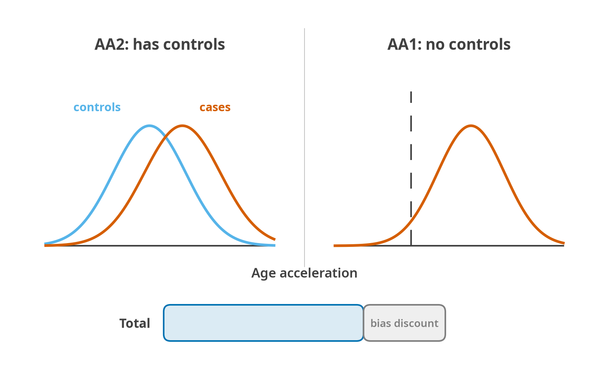

Benchmarking and validation
Benchmarking
res <- combine(list(r1, r2, r3), keys = c("GSE1", "GSE2", "GSE3"))
b <- run_benchmark(res, condition_col = "condition", control = "HC",
dataset_col = "dataset")
b$summaryMedian absolute error against chronological age is reported but never ranked on: a perfect chronological oracle would score best on it and be useless, because it would have no age acceleration left to detect anything with.
11. Benchmarking and validation
11.1 ComputAgeBench, the reference methodology

AA2 compares a condition group against its own healthy controls from the same study, so a clock that over-predicts everybody gains nothing from it. AA1 has no controls to compare against and asks only whether the condition group’s acceleration sits above zero, which a uniformly over-predicting clock passes everywhere. The total discounts the AA1 credit by the clock’s own median signed error on healthy controls, measured on the same data, which is the correction that separates a clock that detects disease from a clock with a broken intercept.
computage (Kriukov, Efimov, Kuzmina, Khrameeva, Dylov; bioRxiv 2024.06.06.597715; KDD ’25) [36].
Premise. MAE against chronological age is the wrong metric because a perfect chronological oracle is useless. Instead, a good clock must show higher age acceleration in people with pre-defined aging-accelerating conditions (AACs) than in healthy controls.
Data. Benchmark split: 10,404 samples, 900,449 CpGs, 65 studies. Training split: 7,419 samples, 907,766 CpGs, 46 studies (healthy people only). Hosted on Hugging Face at computage/computage_bench as per-study parquet plus a single computage_bench_meta.tsv.
Condition classes (ComputAge data_utils.py):
| Class | Conditions |
|---|---|
| HC | healthy control |
| CVD | AS (atherosclerosis), IHD, CVA (stroke) |
| ISD | IBD, HIV, HIV_TB |
| MBD | XOB (extreme obesity), T1D, T2D |
| MSD | OP (osteoporosis), RA |
| NDD | MS, PD, AD, CJD |
| RSD | TB, COPD |
| PGS | CGL (congenital generalised lipodystrophy), WS (Werner), HGPS (progeria) |
The full study table with GSE accessions, PMIDs, first authors, tissues, sample counts and HC availability is ComputAge BenchBSB_table.csv - 66 rows. Highlights: GSE56046 (n = 1,202, atherosclerosis), GSE42861 (n = 689, RA), GSE117859 (n = 608, HIV), GSE111629 (n = 572, PD), GSE59685 (n = 531, AD), GSE131752 (Werner, n = 48), GSE182991 (HGPS, n = 27), GSE214297 (CGL, n = 16).
Filters. Tissues restricted to Blood, Saliva, Buccal (“BSB”). Age limited to [18, 90], except progeria (PGS) which is exempt so that young progeria patients are retained.
Scoring.
AA2_score = number of AA2 datasets where FDR-adjusted p < 0.05
AA1_score = number of AA1 datasets where FDR-adjusted p < 0.05
MedAE = median |prediction − age| over all healthy-control samples
MedE = median (prediction − age) over healthy controls # the bias
total = AA2_score + AA1_score × (1 − max(0, MedE) / MedAE)The bias penalty is the clever part: a clock that simply over-predicts everyone’s age will pass AA1 trivially, so AA1 credit is discounted by how much of the clock’s error is systematic positive bias (ComputAge benchmarking.py:427). GrimAge2 leads AA1 but carries a large positive HC bias, which the formula penalises.
Running it. ComputAge’s run_benchmark(models_config, experiment_prefix, output_folder), not fa.run_benchmark, where models_config has an in_library dict (clock name → params, notably imputation) and a new_models dict (name → path to a pickled sklearn estimator with feature_names_in_). Outputs: AA2 and AA1 p-value CSVs, FDR-corrected boolean CSVs, MedAE CSV, bias CSV, four PDFs, and a pickled benchmark object.
11.2 Biolearn and the Biomarkers of Aging Consortium
Open-source Python library providing a unified interface over aging biomarkers plus a data library that loads GEO, NHANES and Framingham. Reference implementations for 39 biomarkers evaluated over >20,000 individuals; the framework paper reports integration of 17 additional GEO datasets covering 12,463 samples across tissues and age ranges. Version 0.7.0 released January 2025. The consortium runs a Synapse challenge series (chronological age, mortality, multimorbidity) with >$200k in prizes. ComputAge’s model_definitions are explicitly ported from biolearn (ComputAge definitions.py).
11.3 TranslAGE - reliability validation
TranslAGE (Borrus et al., bioRxiv 2025.10.16.682960) harmonises 179 blood methylation datasets and precomputes 41 biomarker scores. On it, Sehgal et al. (bioRxiv 2025.10.13.682176) measured technical and biological ICCs for 18 clocks, pooled with Fisher-Z: technical reproducibility did not predict biological reliability, PCGrimAge was the only clock with biological ICC > 0.75, and the PC-based clocks, PCGrimAge and SystemsAge in particular, stayed technically reliable across slide positions and DNA extraction protocols.
11.4 Intervention responsiveness
In CALERIE, two years of calorie restriction (about 12% below baseline intake in practice) slowed DunedinPACE by 2 to 3% against controls (Waziry et al., Nature Aging 2023, doi:10.1038/s43587-022-00357-y), the first randomised trial to move a methylation clock. Ordering: DunedinPACE responds fastest, GrimAge needs longer or larger interventions, first-generation Horvath barely moves.
11.5 What a benchmarking module in the new tool should do
- Chronological accuracy on healthy controls: MedAE, MAE, RMSE, r, ρ, slope, bias (MedE).
- AA1 and AA2 with configurable distributional assumption and FDR correction.
- Mortality: HR per SD, C-index, time-dependent AUC.
- Reliability: ICC from user-supplied replicate structure, with Fisher-Z pooling.
- Responsiveness: paired-design effect sizes with the measurement ICC reported alongside.
- Cross-clock agreement: Spearman matrix, hierarchical clustering, UMAP.
- A composite leaderboard using the ComputAgeBench total-score formula, with the components shown, never just the total.